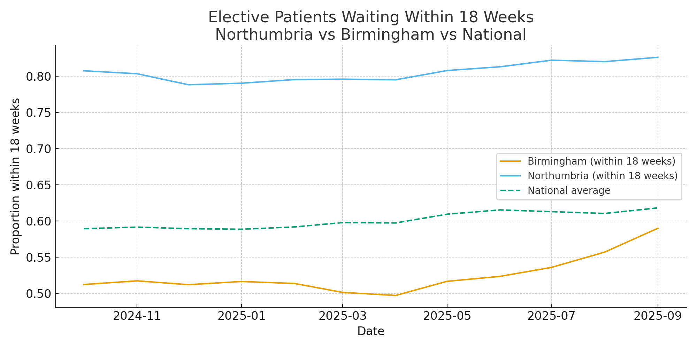
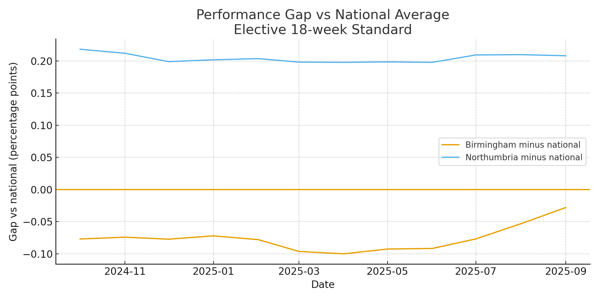
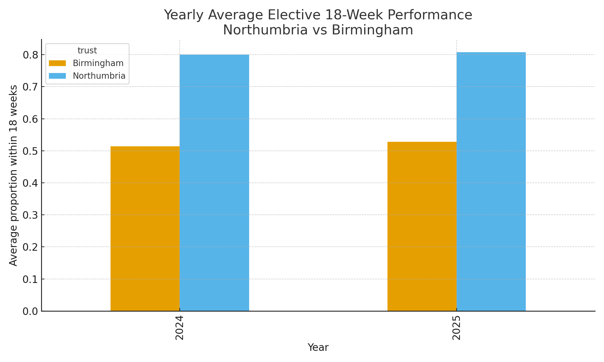

This dashboard compares the proportion of elective patients waiting within 18 weeks for treatment at two NHS trusts – Northumbria (RTF) and Birmingham (RRK) – against the England national average. Data is taken from an official NHS England hospital performance dataset and covers recent monthly reporting periods.
The chart below shows how each trust is performing over time on the 18-week elective standard, with the national average as a benchmark.
Positive values indicate that the trust is performing better than the national average, while negative values indicate performance below the national level.
Yearly averages provide a smoother view of performance and help reduce month-to-month volatility in the data.
A cleaned CSV combining both trusts and the national benchmark is available as part of this project. It can be used for further analysis, experimentation, or additional visualisations.